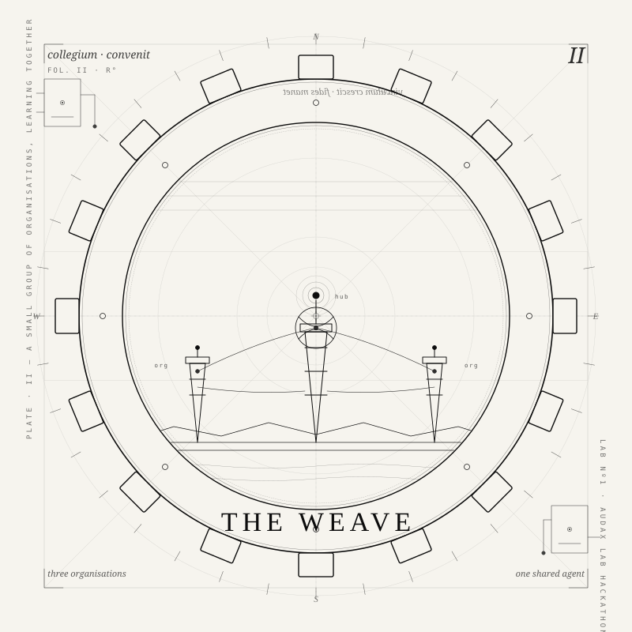
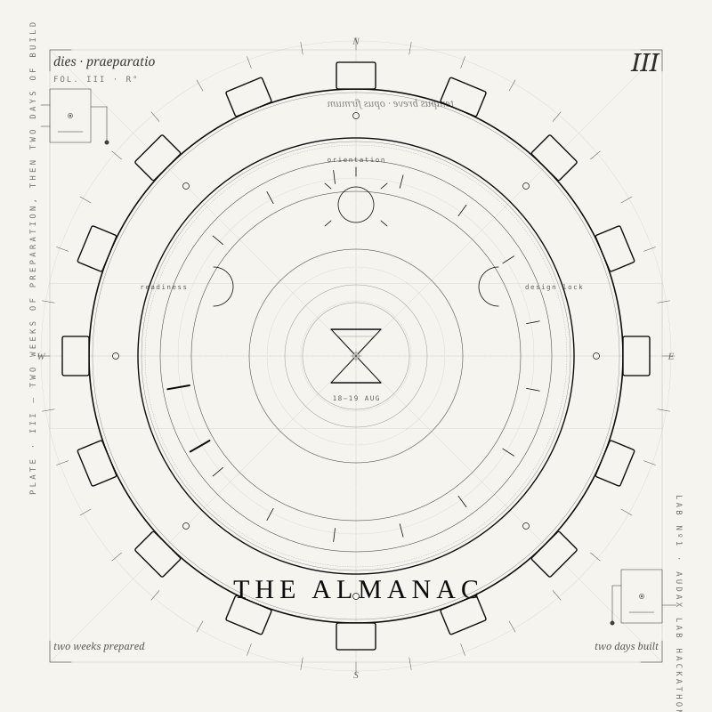
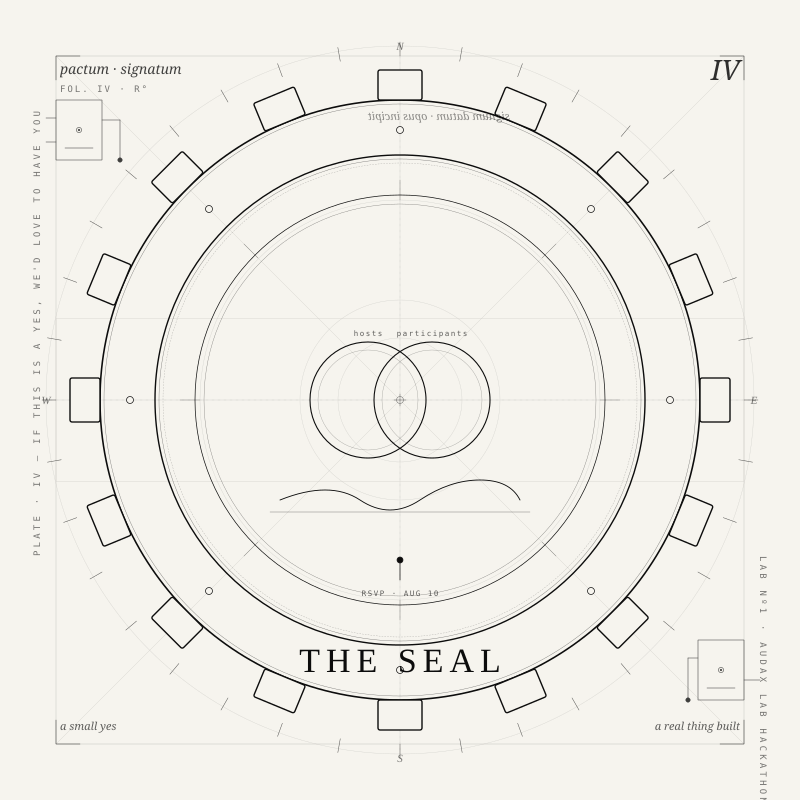

You are invited.
Building ARKo the Agent · A Hackathon
An open invitation from The Coherence Company and SynchroLabs to help build the first working version of a shared AI agent for a network of organisations — a two-day remote hackathon on August 18–19, 2026, with two weeks of collaborative preparation before it.
What becomes possible when organisations can sense the whole field?
Purpose-driven organisations are already surrounded by potential allies. They attend the same gatherings, know many of the same people, work on adjacent problems, and share values, tools, methods, and ambitions.
Yet one organisation is looking for a technical partner while another has already built most of what it needs. One project is searching for a pilot site while another is looking for a meaningful use case. Learning appears in updates, repos, podcasts and feeds — then quietly disappears beneath the next wave.
Networks help organisations find one another. They do not automatically help them sense, remember, and act together.
Can a shared agent help a small ecosystem of aligned organisations understand what is happening across the field, discover opportunities for collaboration, and develop a more coherent shared narrative?
That is the one bounded challenge behind ARK — the first concrete experiment of Audax Labs, the experimental engine of Audax OS. This is not yet an attempt to build a complete inter-organisational operating system. It is the first practical step toward one.
Contents — twelve short sections
A small group of organisations, learning together, in the open.
Audax Lab №1 is the first coming-together of a small working group — three to five organisations building a shared AI agent that helps a distributed community stay aware of each other's work. We practice Build In Public.
The point isn't the memory technology or the models — those are the tools. The point is learning, together, how organisations can actually collaborate through agents. This is an experiment in inter-organisational agentic collaboration, built by the participants for the participants, with a real thing to show at the end.
It is convened by two organisations — The Coherence Company and SynchroLabs — as the inviting hosts. The lab itself belongs to everyone who shows up.

Three organisations, learning to weave their work together.
One shared AI agent for a network of organisations.
ARKo the Agent is the concrete thing we're building — a shared field agent for a micro-ecosystem working in AI for good, collaboration technology, organisational innovation, collective intelligence, regeneration, and adjacent public-purpose fields.
Its first role is not to decide anything on behalf of participating organisations. It is to help the ecosystem:
- understand who is doing what;
- follow what organisations are learning;
- surface emerging needs and offers;
- identify possible collaborations;
- connect people working on related problems;
- preserve useful knowledge across projects;
- and keep a living narrative of what is changing.
Part researcher, part librarian, part matchmaker, part ecosystem storyteller. A diplomatic octopus, ideally with excellent provenance.
The hackathon should produce one complete, observable loop:
Organisational public updates
↓
Collection and source-linked memory
↓
Cross-organisational synthesis
↓
Permission-controlled member delivery
↓
Public learning and a pilot decision
We are not building a finished platform in two days. We are building enough of it that we can point at something real, and honestly decide whether it deserves a short pilot afterwards. If it does, we do that together. If it doesn't, we've learned something and can walk away without bad feelings.
Full vision and proposal: proposal/hackathon-1
We begin with what you already want the world to know.
The first ARK experiment works only with information participating organisations are willing to make public. No confidential data room, no private consortium, no hidden shared memory. Those may become valuable later — they require far stronger protocols for consent, access, security, governance, and revocation.
Can we create meaningful inter-organisational intelligence from what organisations already want the world to know?
So each participant brings one of two things: an organisational agent that can publish and exchange updates, or a consistent public feed ARK can read — a website feed, project journal, newsletter, public database, GitHub activity stream, social feed, or API.
The technology is secondary. The requirement is a regular public signal.
Six questions an update should answer.
Most organisational communication is either promotional or unstructured. ARK needs something more useful than polished announcements, and lighter than formal reporting.
Progress, decisions, launches, pivots, new directions.
Discoveries, insights, failures, emerging patterns.
People, expertise, tools, introductions, pilots, feedback.
Knowledge, code, infrastructure, methods, capacity.
Open questions where peer review would be valuable.
Reusable components, standards, events, research, datasets.
The hackathon tests how these signals get structured, tagged, verified, and connected — without imposing an exhausting new reporting burden. The feed must serve the organisation first. If maintaining it becomes administrative compost, the experiment has failed.
Not a demo. The minimum infrastructure for an ecosystem to become aware of itself.
Can different organisations express activity, needs, offers, and questions in a format that stays human-friendly while being agent-readable? Shared tags, light schemas, common vocabularies.
Can ARK consume several formats without forcing everyone onto one platform? The aim is not to build another little digital castle and demand that everyone move in.
A weekly brief, theme maps, shared technical learning, unresolved questions. Synthesis must preserve disagreement — not one authorised story with the dissent quietly ironed out.
One organisation's need meeting another's offer. Duplicated work, shared questions, complementary capability, possible pilots — and organisations moving through similar stages of the Coherence Journey.
Agents can reveal possibilities. Humans decide whether there is genuine purpose alignment, trust, capacity, and relational fit.
Every synthesis shows the source, the interpretation, the agent's confidence, what may be missing, and how to correct the record.
Organisation A is looking for a public-interest AI evaluation method. Organisation B has recently published related work. Both are exploring community-governed infrastructure.
These organisations should collaborate.
Protocols must come before autonomy. Otherwise the ecosystem gets a black-box bureaucracy with friendlier typography.

Two weeks of preparation, then two days of build.
Two weeks of preparation, then two days of build.
The event is remote. All sessions run on video with the working agent alongside. Preparation sessions and precise times will be confirmed with committed participants after RSVP; times will be chosen to accommodate the range of participants' timezones.
Builders, and organisations willing to work in the open.
This is primarily an invitation to technical builders and organisations working on:
But technical capability is not the only requirement. The strongest participants have meaningful work they are excited to share, an active interest in learning with peers, a willingness to surface needs as well as achievements — and enough humility to let their unfinished questions be visible.
We are not proposing a clinical definition of “public good” at this stage. The invitation is for organisations trying to contribute beyond their own growth. And openness does not mean compulsory vulnerability — it means sharing what is appropriate, useful, and willingly offered, while being honest enough that others can meaningfully understand the work.
Bring what you have. Show up prepared. Help us learn.
Every participating organisation shows up as itself, brings the public work it's already doing, and helps us test whether a shared agent can make that work more visible and connected. There's no pre-existing product to demo, no pitch to sit through. This is a working group.
Required- Nominate one representative who can explain and verify your organisation's public work.
- Provide a short public profile and one to three public sources (a website section, feed, repo, or approved snapshot).
- Join the two preparation sessions in early and mid-August.
- Cover the two build days — fully where possible, or at the opening, midpoint, and final demo checkpoints.
- Review the prototype for accuracy — tell us where it gets your work wrong.
- Use the working agent during preparation and report gaps and errors.
- Join the continuation decision and a short post-event review.
- A technical, design, facilitation, or documentation contributor.
- A $17 contribution per participant — all of which goes directly to funding the agent's infrastructure and models.
- Suggestions for additional sources once the core is working.
Your representative's source knowledge, product judgment, testing, and corrections are the necessary contribution. Everything else is welcome bonus.
Direct hands on a real thing being built with you.
- Early access to a working agent during the two-week preparation period — use it, poke at it, watch it change.
- Direct influence over the first working version of the agent, and over the shape of any pilot that follows.
- A shared prototype built from your own material and the material of other participating organisations.
- Better visibility into what participating organisations are doing, and where your work naturally connects with theirs.
- Reusable public documentation, code, and process — everything open, everything portable.
- Honest evidence about the effort, the limits, and whether the pattern is worth continuing.
The immediate decision isn't whether to fund a permanent platform or sign onto anything long-term. It's whether to join one focused experiment and decide, together, what the evidence supports.
Action learning before master planning.
We are deliberately not beginning with a vast grant-shaped masterplan describing a mature ecosystem that does not yet exist.
Build something small. Put it into contact with real organisations. Observe where the information is unclear, where trust becomes necessary, where the agent makes weak inferences, where the update burden becomes too high — and where an unexpected connection creates genuine value. Then improve the protocols.
The real test of the framework is not whether the architecture is intellectually elegant. It is whether people and organisations can use it to collaborate more effectively, protect human agency, learn from their work, and move meaningful commitments forward.
So the hackathon is the beginning of a continuing Lab — not an isolated weekend of enthusiastic code followed by a repository entering its monastic phase.
Everything above, written out in full.
This invitation is the short version. The design itself lives in the open repository, as plain markdown you can read, quote, fork, or argue with. Two documents carry the product thinking; the rest are the working execution pack for the two days.
The productThe enduring purpose of the agent — who it serves, what it does, its operating model, governance boundaries, and longer-term direction. The canonical source for what the agent should do.
arc-community-agent-vision.mdThe event itself — challenge, scope, MVP, format, roles, deliverables, success criteria, and the decision process at the end. The canonical source for how the first version gets built and tested.
arc-community-agent-hackathon-proposal.mdThe spine: two-week ramp-up, mandatory owners, readiness gates, and the minimal remote workspace.
execution/00-start-here.mdThe source text this page is drawn from, with the organiser checklist that precedes sending it.
execution/01-participant-invitation.mdWhat each organisation submits: the minimum commitment, the public sources, and the public-repository safety rules. 30–45 minutes to complete.
execution/02-participation-and-source-pack.mdTwo-day timetable, checkpoints, decision rights, conflict handling, working hours, and the retrospective format.
execution/04-run-of-show.mdThe two-hour bootstrap spec and the baseline everyone builds on top of — architecture, ingestion, delivery, and a deliberately small budget ceiling.
execution/05-technical-specification.mdCoordination channels, push and PR cadence, and how someone joining after Day 1 gets onboarded mid-sprint.
execution/06-roles-and-readiness.mdSeveral of these are still marked draft, and carry [TO SET] placeholders where dates, owners, and tooling are not yet fixed. That is deliberate: those are the decisions the group makes together, not ones the hosts make in advance. If you read something you'd design differently, that is a good reason to come.
Browse the whole folder: proposal/hackathon-1

A small yes, and a real thing built together.
If this is a yes, we'd love to have you.
RSVP is a two-step. First, join our Telegram — we're gathering there so we can meet and answer any questions before you commit. Second, once you're in, open a pull request on the repo — even a tiny one to your organisation's source pack. That's how we know you're really in. If you're not sure, come to Telegram first and we'll talk.
Join the Telegram → Explore the repoRSVP by August 10, 2026 — open until then